研究与实践随记
Blog.
科研笔记与论文阅读。记录问题、方法，以及支撑结论的证据。
王邻皓 / Linhao Wang
置顶 · 论文与海报ScientistTwo：从研究想法到实验反馈
按研究流程读懂自主科研：怎样筛选想法、解释提升，再把评审反馈变成下一步实验。配合原论文方法图与核心实验。
阅读文章与海报 ↗ 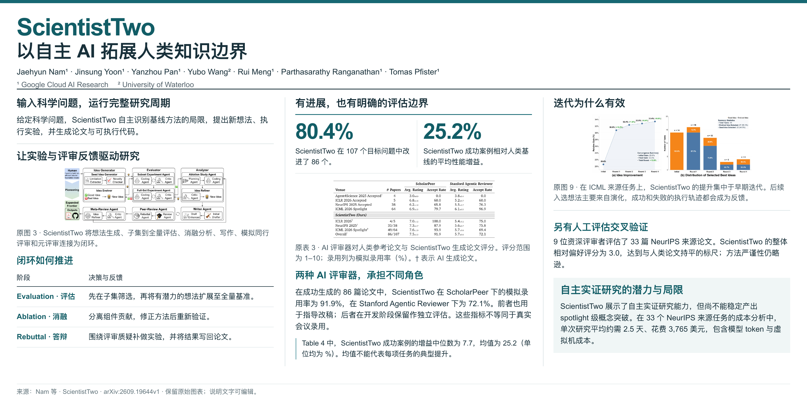
文章归档
40 篇笔记与阅读论文阅读约 13 分钟
解读预声明评测接口、L1/L2 证据层与 P0/P1/P2 优先级，理解为什么 93.2% 的平均检查分仍只对应 55.3% 的严格任务成功率。
人工智能自主软件生成论文阅读

博客阅读约 9 分钟
阅读 Cameron R. Wolfe 的评测实践博客，用科研报告示例讲清人工校准、自动裁判、配对统计和真实使用反馈，并区分建议与实验证据。
人工智能智能体评测博客阅读

论文阅读约 12 分钟
解读粗细视觉表示、三阶段自蒸馏与内容路由，核对 43% token 节省、跨任务质量和真实服务加速的条件。
人工智能高效多模态模型论文阅读

论文阅读约 13 分钟
解读五种视觉动作、按需修订流程，以及网页、SVG、三维重建的质量提升与额外推理成本。
人工智能多模态编程智能体论文阅读
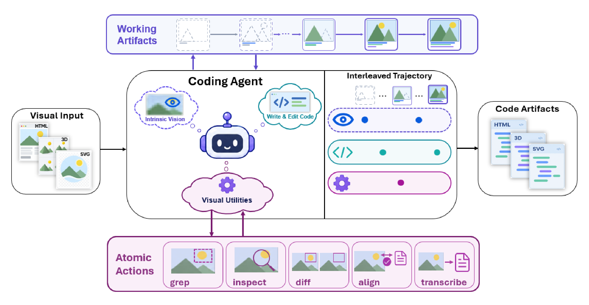
论文阅读约 16 分钟
解读物体、场景与交互世界的统一评测，区分视觉质量、局部机构、完整活动，以及总分和费用的统计边界。
人工智能三维创作智能体论文阅读

论文阅读约 10 分钟
解读四分支推理、可中断的原子建议，以及成功率、主线程 token、实际延迟和 API 账单之间的取舍。
人工智能智能体推理论文阅读

论文阅读约 11 分钟
解读双分类器早停、覆盖率与准确率的分母，以及步骤节省、判分偏差和榜单保真度之间的取舍。
人工智能智能体评测论文阅读

论文阅读约 11 分钟
固定 1B 模型和 185B token 配方，理解小说对写作能力的贡献，以及自动评价、人类偏好和来源识别之间的差异。
人工智能预训练数据论文阅读
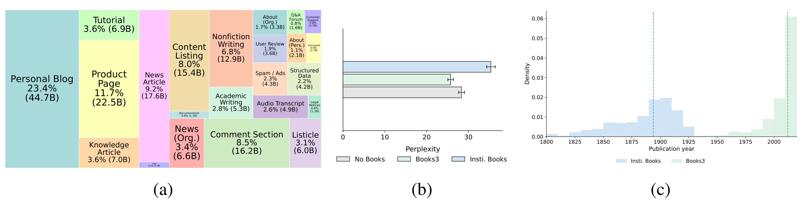
论文阅读约 10 分钟
从组件文件、分层轨迹到改动预测，解读 AHE 的自动演化流程、迁移效果与退化风险。
人工智能编程智能体框架论文阅读

论文阅读约 9 分钟
以钙钛矿太阳能电池为例，理解版本化 Skill 如何核验文献记录、支撑时间留出预测，并限定研究智能体可以发布的主张。
AI for Science科研智能体论文阅读

论文阅读约 5 分钟
从同题轨迹对照到质量和性能门控，解读测试集和跨框架迁移结果。
AI for ScienceAgent 运行框架论文阅读

论文阅读约 5 分钟
区分框架创建、可见反馈优化、留出评估和更换执行模型后的表现。
AI for ScienceAgent 运行框架论文阅读

论文阅读约 5 分钟
从版本档案和分支搜索理解编码 Agent 自改，区分搜索子集、完整评估与跨基准迁移。
AI for ScienceAgent 运行框架论文阅读

论文阅读约 7 分钟
从失败反思、候选经验到技能库更新，解读五项主实验、训练集技能迁移、在线更新和反馈消融。
AI Agents智能体技能学习论文阅读

论文阅读约 7 分钟
从成败轨迹积累经验，用 LinUCB 决定搜哪里，再把成功使用的工具写入图谱。解读两项基准、迁移消融和推理成本。
AI for Science科研智能体论文阅读

论文阅读约 7 分钟
沿候选检索、证据核验、精修和技能回写，解读 DeltaXRDbench 主结果与冻结技能后的留出评估。
AI for Science材料表征智能体论文阅读

论文阅读约 8 分钟
从共享实验日志、提案互评和停滞后改组，理解自组织团队在相同实验资源下如何搜索，以及试验次数与实际耗时的区别。
AI for Science科研智能体论文阅读
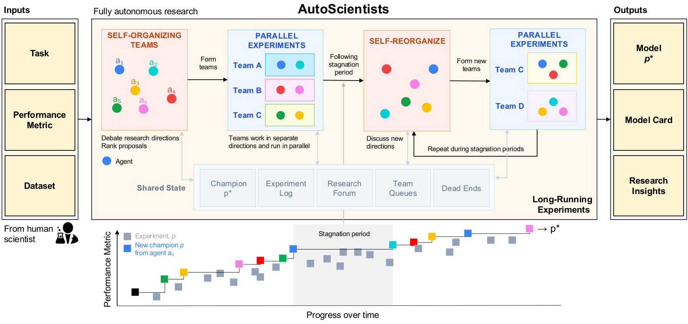
论文阅读约 15 分钟
沿目标骨架、文献与数据依据、准则合成和定向修订流程，解读跨系统收益，以及内部核验、可评分提交与完整科研成功的区别。
AI for Science科研智能体论文阅读
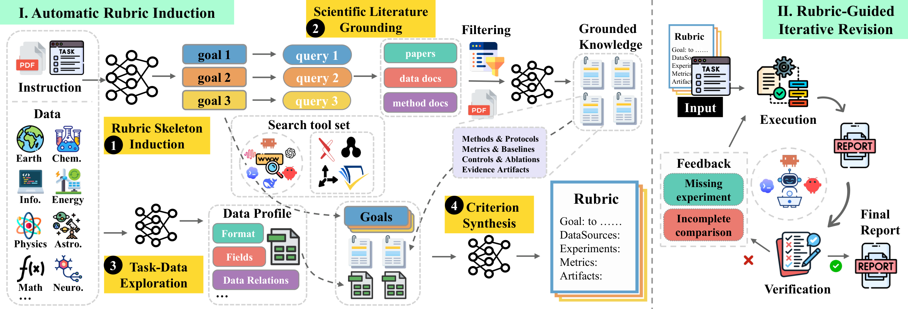
论文阅读约 14 分钟
从 461 个实验任务、过程评分到独立执行，理解单项能力与完整成功的差距，以及 0.5% 严格得分的统计边界。
AI for Science科研智能体评测论文阅读
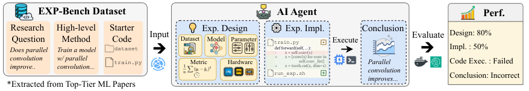
论文阅读约 15 分钟
从隐藏目标、任务输入到加权 RADS 评分，理解科研证据与报告外观的差别；附评分教学算例、可展开说明及与 AutoSciRub 的连接。
AI for Science科研能力评测论文阅读
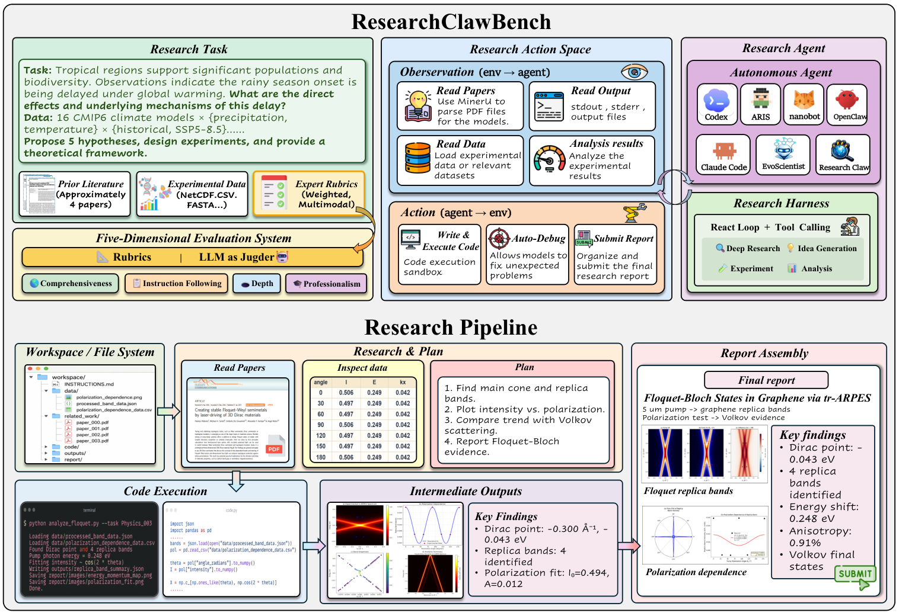
论文阅读约 15 分钟
从统一任务、受控文献工具到成本与产物核验，理解科研智能体的整体成绩，以及平均步骤得分与完整研究成功率的距离。
AI for Science科研智能体评测论文阅读
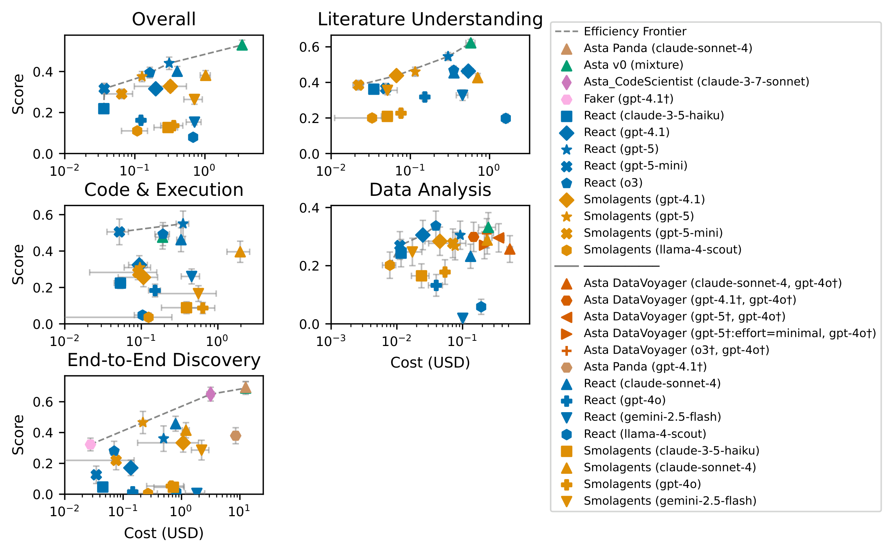
论文阅读约 14 分钟
沿构思、实验与经验回写流程，解读双记忆和三种演化机制，区分提案人评、代码成功率与六篇论文录用的证据边界。
AI for Science科研智能体论文阅读
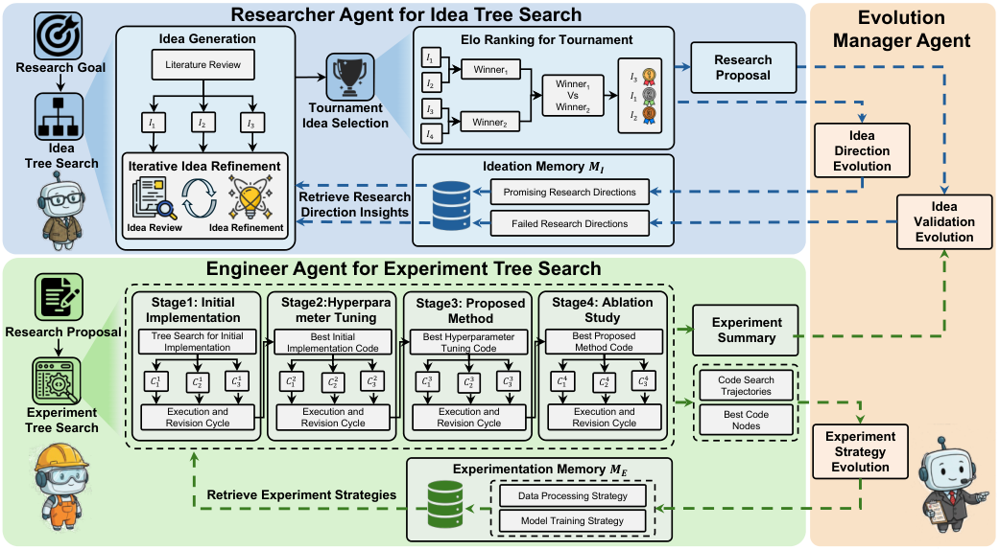
论文阅读约 13 分钟
沿资源恢复、实验执行与反思优化流程，解读八个 Agent 的分工、105/125 的结果，以及有效性监督和计算成本的边界。
AI for Science科研智能体论文阅读
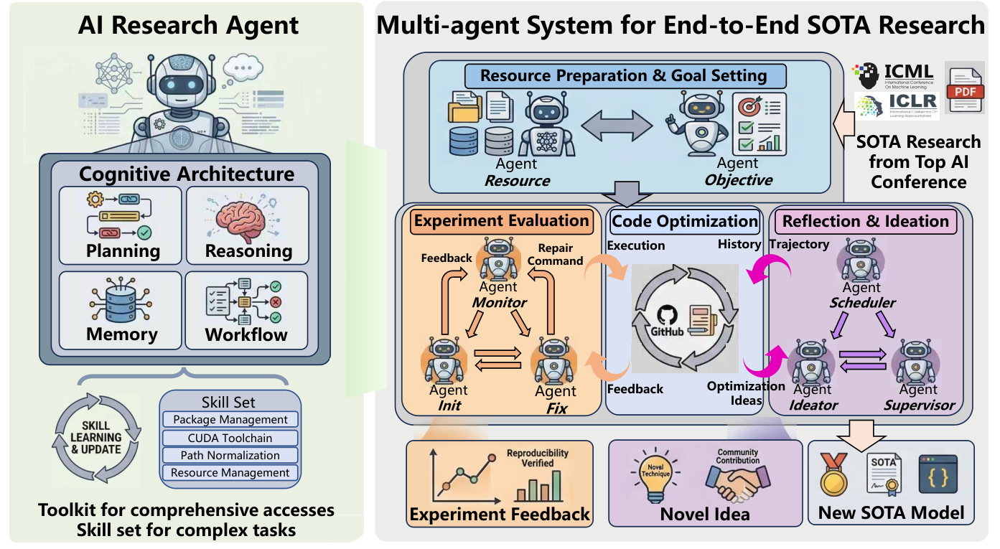
论文阅读约 11 分钟
从代码实现、独立执行到结果匹配，理解论文复现的层级评分，以及科研智能体持续推进实验的瓶颈。
AI for Science科研智能体评测论文阅读
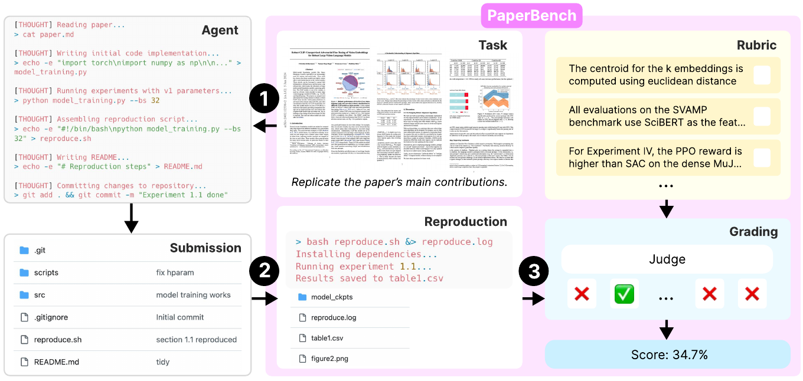
论文阅读约 8 分钟
从专家出题、独立复审到 10 分制 rubric，理解竞赛成绩与研究题表现的差异，以及评测分数能说明什么。
AI for Science科研能力评测论文阅读
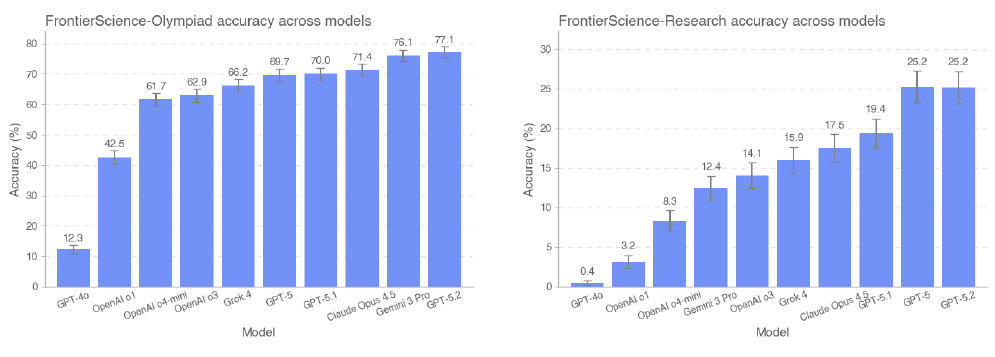
论文阅读约 10 分钟
数字来自哪次实验，方法是否对应代码，引用是否真实？沿文献、实验与写作流程，理解证据链和四项产物审计。
AI for Science科研智能体论文阅读
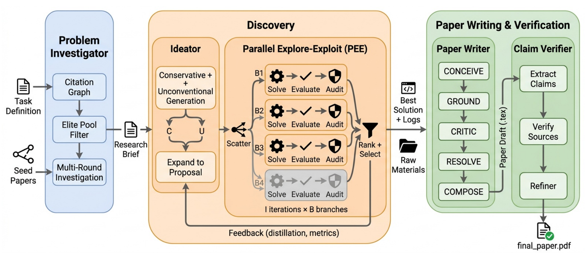
论文阅读约 9 分钟
从研究场景、题目测评到多轮项目，理解科学发现能力该怎样评价，以及答题分数何时无法预测研究表现。
AI for Science科研能力评测论文阅读
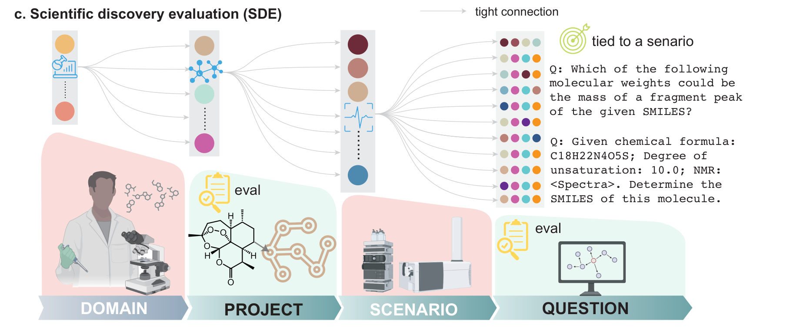
论文阅读约 9 分钟
按研究流程读懂自主科研：怎样筛选想法、解释提升，再把评审反馈变成下一步实验。配合原论文方法图与核心实验。
AI for Science科研智能体论文阅读
科研笔记约 15 分钟
把病灶是否存在、模型如何回答，以及 Probe 读出了什么分开理解，建立医学 VLM 可解释性研究的入门框架。
医学 AI可解释性Probe
论文阅读约 10 分钟
从系统架构、实验与失败案例出发，区分带引用的解释、诊断准确性与真正的临床效用。
医学 AI科研智能体证据

科研笔记约 8 分钟
从可执行任务包到独立验证、局部修复与干净重放，理解 G–V–R 为什么不只是一次自我反思。
Coding Agent验证器数据工程
科研笔记约 14 分钟
梳理需求溯源、原子准则、hard gates、过程评价与对抗审计，区分评分一致性和规则本身的有效性。
评价与奖励Coding AgentRubric
科研笔记约 6 分钟
同一份文档或工具记录，怎样逐步增加任务、状态与验证结构，转化为 SFT 和 RL 可用的数据。
数据工程Agent 训练强化学习
科研笔记约 12 分钟
从 Plan-and-Write 到长篇记忆与读者选择，整理生成路线、评价维度和优先阅读清单。
长篇生成文献地图交互式叙事
论文阅读约 1 分钟
不更新模型权重的语言反思，如何影响下一轮行动，以及错误记忆为什么需要被检查。
自我修正科研智能体论文阅读
论文阅读约 1 分钟
将初答、外部工具核验与修订连接起来，理解 self-critique 和 tool-grounded critique 的区别。
自我修正科研智能体论文阅读
论文阅读约 1 分钟
同一个模型扮演生成、反馈与修订角色，是一个简单而重要的推理时优化基线。
自我修正科研智能体论文阅读
论文阅读约 10 分钟
从截图与 DOM 观察走向 StateProbe 运行时探测，理解物理、资产和状态同步如何被统一评测。
人工智能3D 世界生成论文阅读

论文阅读约 9 分钟
理解一种无需训练的测试时解码：按视觉 token 注意力选择中间层窗口，再计算一次以改善视觉感知。
人工智能多模态模型论文阅读

论文阅读约 10 分钟
从可演化代码块、自动评价器和程序数据库出发，理解一个 coding agent 如何把测试时搜索推进到数学与工程发现。
AI for Science算法发现论文阅读
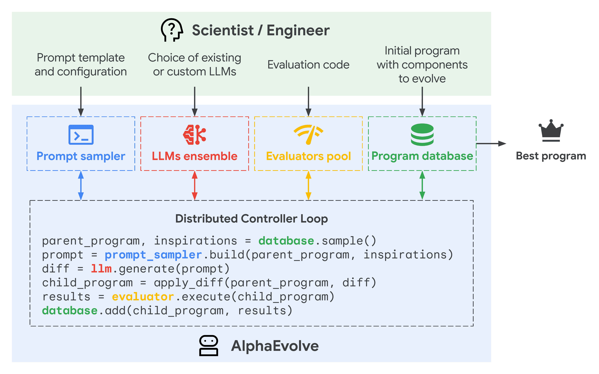
没有找到相关文章
试试其他关键词，或查看全部文章。